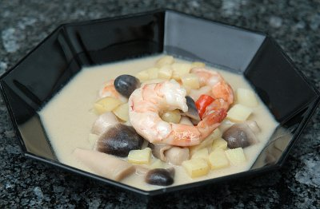

| Zutaten für 4 Personen: | |
| 5 dl | Kokosnussmilch |
| 5 dl | Gemüsebouillon |
| 1/2 | Galgantwurzel |
| 1 Stengel | Zitronengras |
| 4 | Limonenblätter |
| 4 | Kartoffeln |
| 8 | gekochte Riesenkrevetten |
| Fischsauce | |
| Limonensaft | |
| 1/2 | roter Chili |
| 1/4 Bund | Koriander |
| 100g | Straw Pilze |
Bouillon in einer Pfanne zubereiten.
Kokosnussmilch dazugeben und aufkochen.
Die Galgantwurzel in 4 Stücke schneiden und zugeben.
Den Stengel Zitronengras mit dem Küchenhammer 2 mal klopfen damit er sein Aroma abgibt und zugeben.
Die Limonenblätter in der Hand zerdrücken und ebenfalls zugeben.
50 Minuten köcheln lassen.
Die Suppe absieben und wieder in die Pfanne geben.
Die Kartoffeln in kleine Würfel schneiden, zugeben und gar kochen (ca. 5 Minuten).
Kurz vor dem Essen die Krevetten und die Straw Pilze zugeben und 1-2 Minuten mitkochen.
Mit der Fischsauce , dem Limonensaft und dem roten Chili würzen.
Den Koriander als Garnitur verwenden.
Patricia Krummenacher
Gelang hervorragend unter der fachkundigen Leitung vom Patricia Krummenacher im November 2004. Erneut für das Foto am 11.4.2009 zubereitet. Ich habe die Mengen für 2 Personen halbiert und das gab eine nette kleine Vorspeise. So gut wie das schmeckt ist das dann schon etwas bescheiden. RE
@LINKBACK_TAG@ @WAKELOCK@